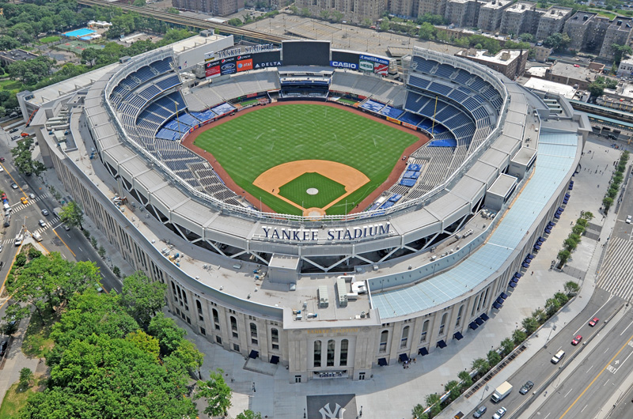

Paseo en Helicóptero
El paseo en helicóptero por Nueva York es la excursión más envidiable de la ciudad. Desde las alturas podréis disfrutar de las mejores vistas de los lugares más emblemáticos de Manhattan. ¡Será un recuerdo inolvidable! Los helicópteros tienen capacidad para 6 o 7 personas, además del piloto. El precio de la actividad es desde 150 a 200 euros.
Video de Paseo en Helicoptero
Página para Resevar
Luces de Navidad: Tour navideño
ZAdéntrate en la Navidad neoyorkina descubriendo la sorprendente iluminación del barrio Dyker Heights y contemplando la Gran Manzana desde sus mejores miradores ¡Happy New Year!. El precio de la actividad es de 40 euros.
Video de las Luces de Navidad en las Casas
Página para Resevar
Entradas para los New York Yankees
Disfruta de una de las experiencias más neoyorquinas asistiendo a un encuentro en el impresionante Yankee Stadium, el estadio de los New York Yankees, el equipo de béisbol más famoso del mundo.El precio de la actividad es desde 30 a 80 euros.
Página para Resevar
Autobús turístico
Disfruta de los monumentos más emblemáticos de Nueva York gracias al autobús turístico. Podrás subir y bajar en cualquiera de sus paradas para explorar la ciudad a tu ritmo. El autobús turístico de Nueva York es una forma cómoda y práctica de recorrer la ciudad que nunca duerme. Los autobuses, con dos plantas y techo descubierto, recorren los principales lugares de interés. El precio de la actividad es de 40 a 50 euros.
Video del Autobús Turístico
Página para Resevar